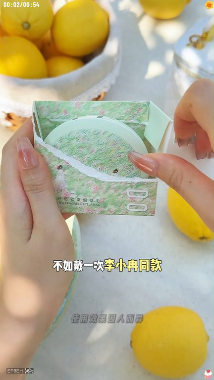
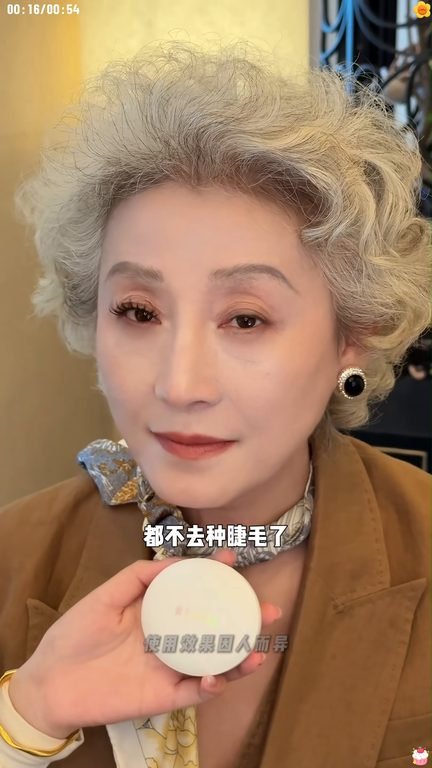
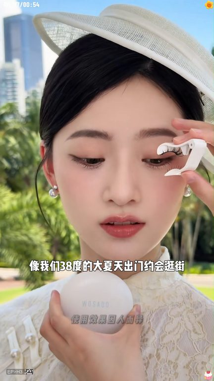
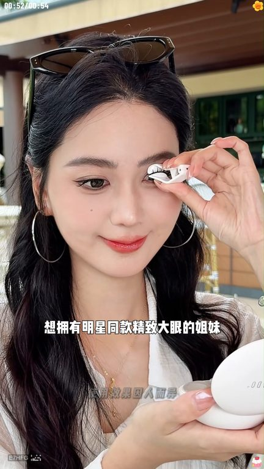

TOP 1 · 代表素材深度拆解
核心放量 稳健
视频为原始素材 HTTPS 链接；点击后加载，建议在网络环境良好时播放。
21.8万素材消耗
2.95%CTR
100.0%类目消耗占比
+0.00pp较类目均值
表现判断
该素材是类目内第 1 名，属于“核心放量”；CTR 高于类目均值。消耗体现承接规模，CTR 体现首屏与定向效率，两项应结合判断，不能仅以单指标下结论。
表达标签
口播三段式证据
开场钩子夏天你種十次睫毛不如帶一次李小染同款慈禧睫毛我自己平時呢就非常喜歡用這個油絲黑感覺非常的舒適
中段论证現在連我71歲的老老都不去種睫毛了這是夏天要表白一萬次的慈禧睫毛專利慈禧技術能夠自然放大雙眼反覆佩戴也不會變形翹邊它不用手髮也不用去美容院只要三秒鐘就能打造一個精緻太陽花睫毛還是人工編織仿真毛料柔軟輕盈不眨眼單眼皮明明眼的姐妹也可以放心用而且她還能做到防水防汗
结尾转化柔軟輕盈不眨眼單眼皮明明眼的姐妹也可以放心用而且她還能做到防水防汗像我們38度的大夏天出門約會逛街再也不怕暈省熊貓眼了一整天逛街爆汗都穩穩在線你要是等下個月再買慈禧睫毛那就真的錯過李小染送來的夏日福利了拍一件到手三件還支持七天免費時代想擁有明星同款精緻大眼的姐妹快來試試吧
有效点
- CTR 2.95% 高于类目均值 2.95%，开场或人群指向具备点击优势
- 口播包含明确到手机制或直播间指令，转化路径较完整
迭代动作
- 保留当前高效钩子，复制 3 个变量版本：人物、首句和首帧分别单变量测试
- 中段每 5–8 秒补一次画面变化或证据点，避免同景口播造成信息疲劳
- 促销口径与资质信息保持同屏可验证，结尾只保留一个明确行动指令
合规关注

钩子建立 · 2.2s

场景/问题展开 · 16.4s

卖点证据 · 37.8s

转化收口 · 52.0s
查看完整口播摘要
夏天你種十次睫毛不如帶一次李小染同款慈禧睫毛我自己平時呢就非常喜歡用這個油絲黑感覺非常的舒適因為它沒有澆水沒有甲泉沒有那種很熏眼睛很膩眼睛的感覺現在連我71歲的老老都不去種睫毛了這是夏天要表白一萬次的慈禧睫毛專利慈禧技術能夠自然放大雙眼反覆佩戴也不會變形翹邊它不用手髮也不用去美容院只要三秒鐘就能打造一個精緻太陽花睫毛還是人工編織仿真毛料柔軟輕盈不眨眼單眼皮明明眼的姐妹也可以放心用而且她還能做到防水防汗像我們38度的大夏天出門約會逛街再也不怕暈省熊貓眼了一整天逛街爆汗都穩穩在線你要是等下個月再買慈禧睫毛那就真的錯過李小染送來的夏日福利了拍一件到手三件還支持七天免費時代想擁有明星同款精緻大眼的姐妹快來試試吧